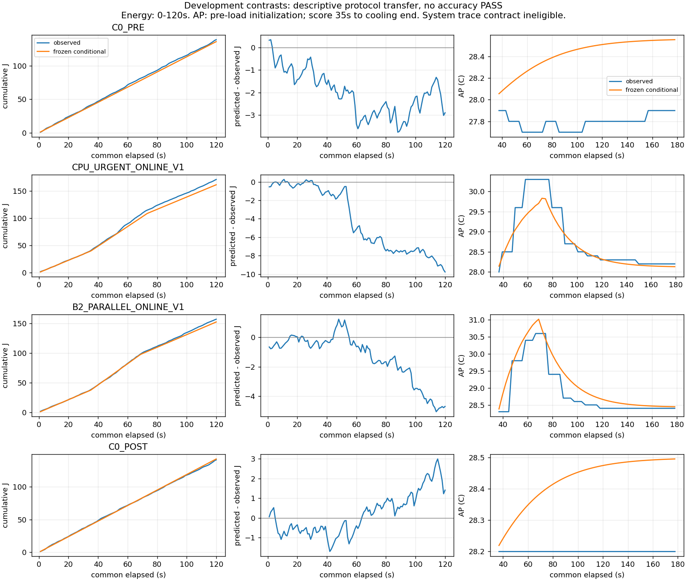

개발4 / 독립 확인0 · 추론224 · 설치0 · 시스템 CPU 귀속 null · 정확도 PASS 없음 · experiment_ready=false
실제 PAR 점유13.154초. 시작 AP27.6–28.2°C, 원래 개발 시작 범위 밖. 아래 예측은 실제 일정·부하 전 입력에 조건부로 계산한 프로토콜 전이 진단입니다. 정책 순위/E2E 검증이 아닙니다.
| 조건 | 관측120초J | 예측J | 예측−관측J | AP MAE°C | 시스템trace |
|---|---|---|---|---|---|
| C0_PRE | 138.729 | 135.832 | -2.897 | 0.631 | contract_ineligible |
| CPU_URGENT_ONLINE_V1 | 171.210 | 161.438 | -9.772 | 0.207 | contract_ineligible |
| B2_PARALLEL_ONLINE_V1 | 157.006 | 152.319 | -4.688 | 0.278 | contract_ineligible |
| C0_POST | 141.342 | 142.755 | +1.413 | 0.228 | contract_ineligible |
AP 점수는 common35초부터 냉각말177.6–179.2초까지입니다. file_write_period_ms와 flush_period_ms를 혼동하지 않습니다. config_write_into_file_no_flush=1을 사후 삭제해 기존 검사를 통과시키지 않았습니다.
